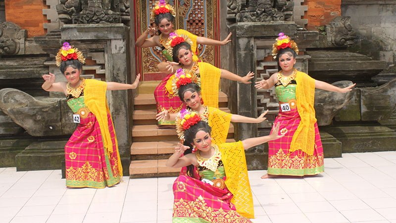

Tari Puspanjali
Tari Puspanjali, Bali. Dalam kebudayaan manusia Indonesia, penghormatan terhadap tamu sangatlah dijunjung tinggi. Bisa dikatakan, masing-masing suku memiliki prosesi yang khas untuk menyambut kedatangan tamu mereka, khususnya tamu yang dianggap penting atau istimewa. Dalam hal ini, prosesi tersebut banyak dirupakan dalam bentuk tari penyambutan atau tarian selamat datang.
Sebagai misal adalah Pulau Bali yang merupakan salah satu pusat kebudayaan di Indonesia, juga memiliki tari yang difungsikan untuk menyambut tamu. Bahkan, tari penyambutan Bali sangat banyak macamnya. Diantara yang populer seperti Tari Pendet, Tari Payembrama, Tari Gabor, ada juga Tari Puspanjali karya dari Swasthi Widjaya Bandem, dengan dibantu penata iringan, I Nyoman Windha.
Puspanjali merupakan jenis tari kreasi baru yang ditarikan secara berkelompok oleh 5-7 penari wanita. Sebuah tari sekuler (balih-balihan) yang indah dalam kesederhanaan gerak, lembut dan dinamis. Dalam hal ini, Puspanjali banyak terinspirasi dari Tari Rejang yang mewakili kegembiraan gadis Bali dalam menyambut tamu. Bedanya, Rejang adalah tarian sakral untuk menyambut para Dewa.
<< Kembali